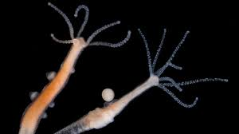
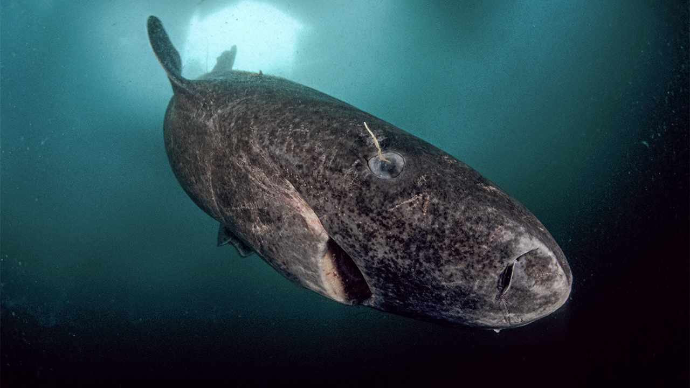
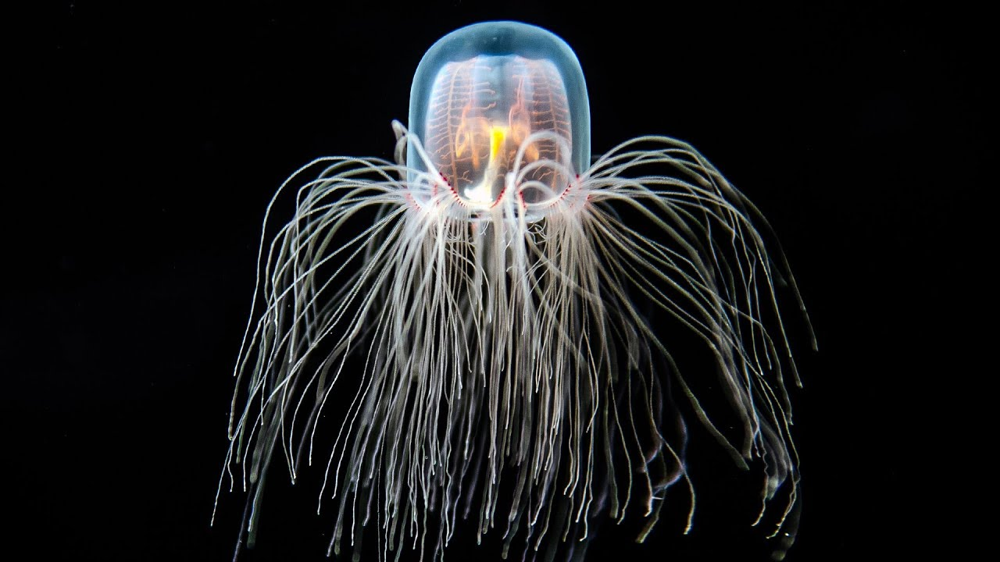

Hydra
The hydra is a tiny freshwater invertebrate, with the ability to regenerate themselves indefinitely. they also can regrow limbs and heads, hence the comparison to the mythological hydras. due to these facts they are a pinnacle of research for aging in biology.
Greenland Shark
The greenland shark is one of the longest living creatures, with some recorded to be over 400 years old. However, their longevity and slow reproductive rate makes them highly vulnerable to overfishing.
Immortal Jellyfish
The Immortal Jellyfish, true to its title, has the ability to revert its age when reaching adulthood through a process called transdifferentiation, hence the reason it is considered biologically immortal.